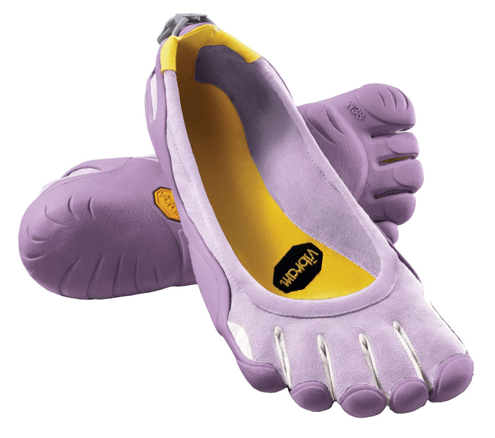
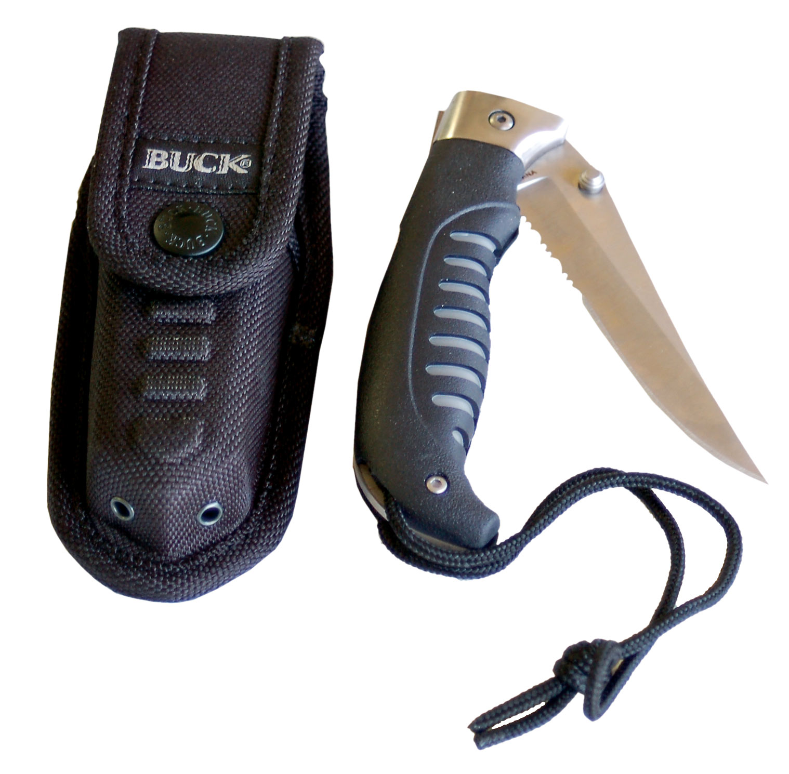
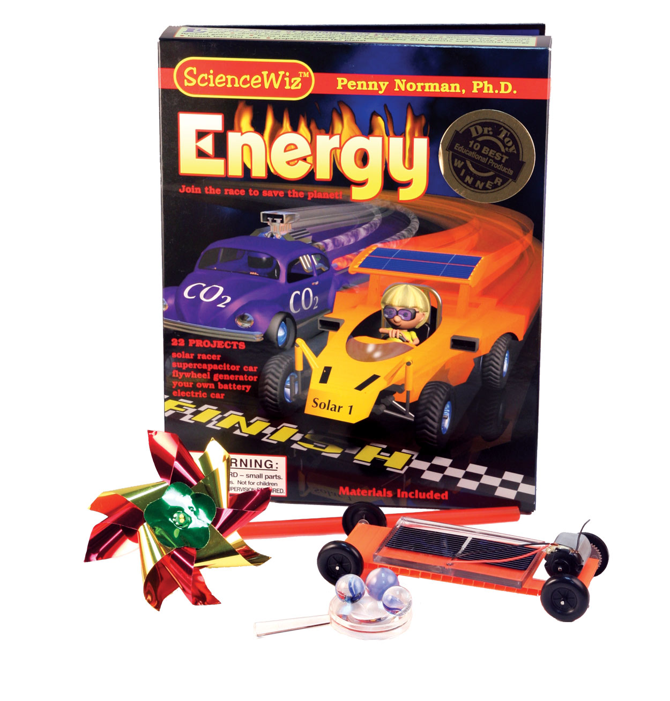

Stumped on what to give this holiday season? In this gift guide, we’ve included five great items that are as much fun to give as they are to get.
“What the heck is on your feet?!” Why, Vibram Fivefingers - the coolest shoes since shoes were invented, and the closest you can possibly get to going barefoot. With individual pockets for each toe and thin Vibram TC1 performance rubber soles, FiveFingers let you play as though barefoot, but have just enough sole to protect your feet from rocks, glass and whatever else you encounter on the trail or city sidewalks. Assistant Editor Aubrey Vaughn says, “I love that my feet feel stronger and how my toes respond to unpaved terrain, and they’re great for running unfettered through puddles.” FiveFingers come in several styles.
Starting at $75; 978-318-0000; Vibram FiveFingers (Order from Kayak Shed for free shipping.)
For the active women in your life, consider a pair of overalls or coveralls made by Rosies Workwear. The overalls we tried out this summer were terrific - they’re soft, made of medium-weight cotton, and have removable foam kneepads and pant legs that unzip to convert to shorts. All in all, a premium product.
$45; 805-541-2443; Rosie’s Workwear
For anyone who spends time outdoors, you can’t go wrong with a pocket knife as a gift. And when it comes to knives, you can’t go wrong with one made by Buck Knives. This family-owned company has been around for more than a century and offers a huge selection of knives, all with a lifetime warranty. Their new all-purpose folding utility knife, the Gamut, caught our eye. It features a 37⁄8-inch blade, with thumb studs for easy one-handed opening.
$35; 800-326-2825; Buck Knives
For a fun gift that will help children explore the world of renewable energy, check out the Energy Wiz Experiment Book and Kit from Science Wiz. This award-winning toy has materials for 22 separate projects, including a solar car. For ages 8 and older; available at many toy stores.
$19.95; 510-222-2638
Looking for a gift for someone who enjoys cooking? Take a look at the cheese kits available from New England Cheesemaking Supply. The 30 Minute Mozzarella and Ricotta Kit includes recipes and all the specialty supplies you need to make these basic cheeses. Makes 30 batches of mozzarella - just add milk.
$24.95; 413-628-3808; New England Cheesemaking Supply
|
 VIBRAM USA Vibram Fivefinger shoes are designed to strengthen your feet. |
 MATTHEW T. STALLBAUMER The Gamut, a cutting-edge knife from Buck Knives. |
 ALISON ROGERS Science Wiz project kits make great gifts for kids (and adults!). |